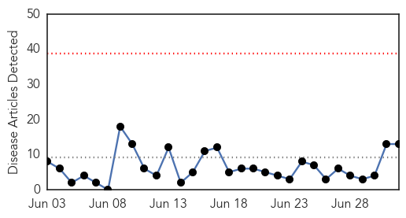
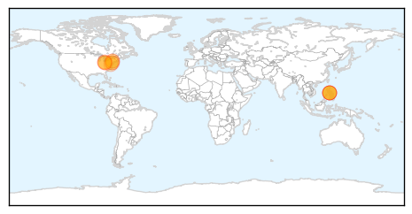
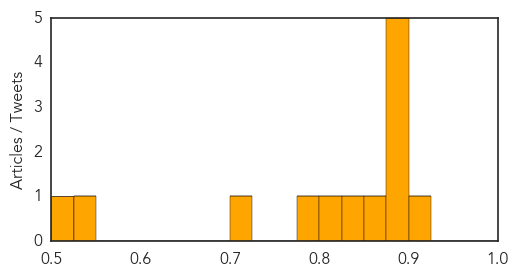
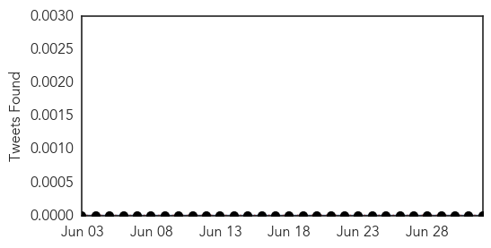
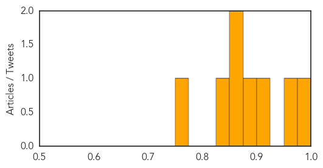

Measles
30-Day Web Trend
0 alerts, 0 warnings

30-Day Twitter Trend
0 alerts, 0 warnings

Article Locations
Article Confidences
Top Articles:
- 0.914
- Vaccination outreach tries to curb Amish measles outbreak
- 0.895
- Disease hits Amish community
- 0.894
- Amish events may be marred by measles
- 0.879
- Measles outbreak complicates 2 big Amish events
- 0.878
- Measles outbreak complicates 2 big Amish events
- 0.877
- Measles outbreak complicates two big Amish events
- 0.857
- Measles outbreak complicates 2 big Amish events
- 0.836
- Study finds vaccine side effect extremely rare
- 0.804
- Measles outbreak complicates Amish events
- 0.780
- Measles outbreak raises urgency
- 0.721
- Pa. health officials on alert as Amish measles outbreak spreads
- 0.529
- Vaccine Doses Increase for New York Students
- 0.507
- Vincennes Sun-Commercial: News
Top Tweets:
-
No tweets found for Jul 02, 2014
West Nile Virus
30-Day Web Trend
4 alerts, 2 warnings

30-Day Twitter Trend
0 alerts, 0 warnings

Article Locations

Article Confidences
Top Articles:
- 0.975
- Contra Costa: Birds, mosquitoes test positive for West Nile
- 0.970
- Michigan health officials say West Nile virus detected in Saginaw County
- 0.918
- EEE virus detected in Vermont mosquitoes
- 0.882
- West Nile virus found in Michigan mosquito pool
- 0.872
- Dead Birds, Mosquitoes in Contra Costa...
- 0.856
- EEE virus detected in Vermont mosquitoes
- 0.840
- Mosquitos, Dead Birds Test Positive For West Nile Virus In Contra Costa County « CBS San Francisco
- 0.755
- Fort Collins not spraying mosquitos until 2 people are infected with West Nile Virus
Top Tweets:
-
No tweets found for Jul 02, 2014